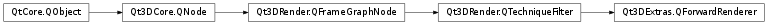

Qt3DExtras.QForwardRenderer¶
Synopsis¶
Functions¶
- def
camera() - def
clearColor() - def
externalRenderTargetSize() - def
gamma() - def
isFrustumCullingEnabled() - def
surface() - def
viewportRect()
Slots¶
- def
setCamera(camera) - def
setClearColor(clearColor) - def
setExternalRenderTargetSize(size) - def
setFrustumCullingEnabled(enabled) - def
setGamma(gamma) - def
setSurface(surface) - def
setViewportRect(viewportRect)
Signals¶
- def
cameraChanged(camera) - def
clearColorChanged(clearColor) - def
externalRenderTargetSizeChanged(size) - def
frustumCullingEnabledChanged(enabled) - def
gammaChanged(gamma) - def
surfaceChanged(surface) - def
viewportRectChanged(viewportRect)
Detailed Description¶
The
QForwardRendererprovides a default FrameGraph implementation of a forward renderer.Forward rendering is what OpenGL traditionally uses. It renders directly to the backbuffer one object at a time shading each one as it goes.
QForwardRendereris a single leaf FrameGraph tree which contains aQt3DRender.QViewport, aQt3DRender.QCameraSelector, and aQt3DRender.QClearBuffers. TheQForwardRendererhas a default requirement filter key whose name is “renderingStyle” and value “forward”. If you need to filter out your techniques, you should do so based on that filter key.By default the viewport occupies the whole screen and the clear color is white. Frustum culling is also enabled.
-
class
PySide2.Qt3DExtras.Qt3DExtras.QForwardRenderer([parent=nullptr])¶ Parameters: parent – PySide2.Qt3DCore.Qt3DCore::QNode
-
PySide2.Qt3DExtras.Qt3DExtras.QForwardRenderer.camera()¶ Return type: PySide2.Qt3DCore.Qt3DCore::QEntitySee also
PySide2.Qt3DExtras.Qt3DExtras::QForwardRenderer.setCamera()
-
PySide2.Qt3DExtras.Qt3DExtras.QForwardRenderer.cameraChanged(camera)¶ Parameters: camera – PySide2.Qt3DCore.Qt3DCore::QEntity
-
PySide2.Qt3DExtras.Qt3DExtras.QForwardRenderer.clearColor()¶ Return type: PySide2.QtGui.QColorSee also
PySide2.Qt3DExtras.Qt3DExtras::QForwardRenderer.setClearColor()
-
PySide2.Qt3DExtras.Qt3DExtras.QForwardRenderer.clearColorChanged(clearColor)¶ Parameters: clearColor – PySide2.QtGui.QColor
-
PySide2.Qt3DExtras.Qt3DExtras.QForwardRenderer.externalRenderTargetSize()¶ Return type: PySide2.QtCore.QSizeSee also
PySide2.Qt3DExtras.Qt3DExtras::QForwardRenderer.setExternalRenderTargetSize()
-
PySide2.Qt3DExtras.Qt3DExtras.QForwardRenderer.externalRenderTargetSizeChanged(size)¶ Parameters: size – PySide2.QtCore.QSize
-
PySide2.Qt3DExtras.Qt3DExtras.QForwardRenderer.frustumCullingEnabledChanged(enabled)¶ Parameters: enabled – PySide2.QtCore.bool
-
PySide2.Qt3DExtras.Qt3DExtras.QForwardRenderer.gamma()¶ Return type: PySide2.QtCore.floatSee also
PySide2.Qt3DExtras.Qt3DExtras::QForwardRenderer.setGamma()
-
PySide2.Qt3DExtras.Qt3DExtras.QForwardRenderer.gammaChanged(gamma)¶ Parameters: gamma – PySide2.QtCore.float
-
PySide2.Qt3DExtras.Qt3DExtras.QForwardRenderer.isFrustumCullingEnabled()¶ Return type: PySide2.QtCore.bool
-
PySide2.Qt3DExtras.Qt3DExtras.QForwardRenderer.setCamera(camera)¶ Parameters: camera – PySide2.Qt3DCore.Qt3DCore::QEntitySee also
PySide2.Qt3DExtras.Qt3DExtras::QForwardRenderer.camera()
-
PySide2.Qt3DExtras.Qt3DExtras.QForwardRenderer.setClearColor(clearColor)¶ Parameters: clearColor – PySide2.QtGui.QColorSee also
PySide2.Qt3DExtras.Qt3DExtras::QForwardRenderer.clearColor()
-
PySide2.Qt3DExtras.Qt3DExtras.QForwardRenderer.setExternalRenderTargetSize(size)¶ Parameters: size – PySide2.QtCore.QSizeSee also
PySide2.Qt3DExtras.Qt3DExtras::QForwardRenderer.externalRenderTargetSize()
-
PySide2.Qt3DExtras.Qt3DExtras.QForwardRenderer.setFrustumCullingEnabled(enabled)¶ Parameters: enabled – PySide2.QtCore.boolSee also
PySide2.Qt3DExtras.Qt3DExtras::QForwardRenderer.isFrustumCullingEnabled()
-
PySide2.Qt3DExtras.Qt3DExtras.QForwardRenderer.setGamma(gamma)¶ Parameters: gamma – PySide2.QtCore.floatSee also
PySide2.Qt3DExtras.Qt3DExtras::QForwardRenderer.gamma()
-
PySide2.Qt3DExtras.Qt3DExtras.QForwardRenderer.setSurface(surface)¶ Parameters: surface – PySide2.QtCore.QObjectSee also
PySide2.Qt3DExtras.Qt3DExtras::QForwardRenderer.surface()
-
PySide2.Qt3DExtras.Qt3DExtras.QForwardRenderer.setViewportRect(viewportRect)¶ Parameters: viewportRect – PySide2.QtCore.QRectFSee also
PySide2.Qt3DExtras.Qt3DExtras::QForwardRenderer.viewportRect()
-
PySide2.Qt3DExtras.Qt3DExtras.QForwardRenderer.surface()¶ Return type: PySide2.QtCore.QObjectSee also
PySide2.Qt3DExtras.Qt3DExtras::QForwardRenderer.setSurface()
-
PySide2.Qt3DExtras.Qt3DExtras.QForwardRenderer.surfaceChanged(surface)¶ Parameters: surface – PySide2.QtCore.QObject
-
PySide2.Qt3DExtras.Qt3DExtras.QForwardRenderer.viewportRect()¶ Return type: PySide2.QtCore.QRectFSee also
PySide2.Qt3DExtras.Qt3DExtras::QForwardRenderer.setViewportRect()
-
PySide2.Qt3DExtras.Qt3DExtras.QForwardRenderer.viewportRectChanged(viewportRect)¶ Parameters: viewportRect – PySide2.QtCore.QRectF
© 2018 The Qt Company Ltd. Documentation contributions included herein are the copyrights of their respective owners. The documentation provided herein is licensed under the terms of the GNU Free Documentation License version 1.3 as published by the Free Software Foundation. Qt and respective logos are trademarks of The Qt Company Ltd. in Finland and/or other countries worldwide. All other trademarks are property of their respective owners.